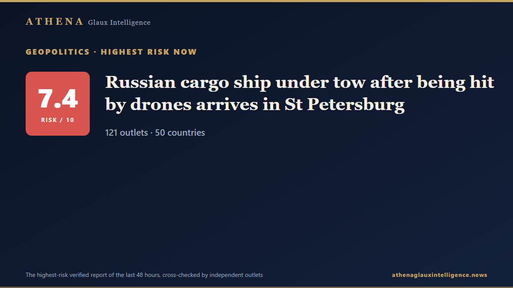

Κίνδυνος 7.4Αυξημένος
ATHENA Glaux Intelligence — Παγκόσμια ειδησεογραφική ανάλυση — κάθε αριθμός εξηγημένος
Γεωπολιτική
Όλη η Γεωπολιτική >Υψηλότερος κίνδυνος τώρα

Αυξανόμενος κίνδυνοςΑύξηση τις τελευταίες 24 ώρες
- Qatar needs US and Iran to resume talks to end war, PM saysΚίνδυνος 1.7 → 6.2
- European Commission presents 22nd package of sanctions against RussiaΚίνδυνος 3.4 → 6.6
- Moscow accuses Estonia of hostile actions on ‘verge of triggering open war’Κίνδυνος 0.0 → 6.6
Ναυτιλία & ναυσιπλοϊα
Γραφείο Ναυτιλίας >Υψηλότερος κίνδυνος τώρα
Κίνδυνος 7.6Αυξημένος
Endurance athlete swims in Strait of Hormuz to highlight Iran war's impact on wildlife
Δείτε τα στοιχεία ›
Πίνακας παρακολούθησηςΠεράσματα, λιμάνια και άλλες ναυτιλιακές αναφορές
- Strait of HormuzΔιαταραχήattack / strike · risk 7.6 · 22 newsrooms (72 h)
- Kerch Strait / Black SeaΔιαταραχήattack / strike · risk 7.4 · 123 newsrooms (72 h)
- Danish Straits / BalticΔιαταραχήattack / strike · risk 7.4 · 123 newsrooms (72 h)
Κάθε είδηση, ελεγμένη σε πολλές χώρες.
Το ATHENA Glaux παρακολουθεί 632 ειδησεογραφικά μέσα σε όλο τον κόσμο. Μια είδηση γίνεται επαληθευμένο γεγονός μόνο όταν την αναφέρουν ανεξάρτητα μέσα. Κάθε γεγονός δείχνει ποιος το ανέφερε πρώτος και έναν βαθμό κινδύνου με τους λόγους του.
1.337γεγονότα σε 24 ώρες
632μέσα που παρακολουθούμε
36λεπτά ανάμεσα στις ενημερώσεις
Σεισμός ή πλημμύρα κοντά σας αυτή την εβδομάδα;
Γράψτε την πόλη σας και δείτε σεισμούς, πλημμύρες, καταιγίδες και επίσημες προειδοποιήσεις κοντά της, με λίστα κιτ έκτακτης ανάγκης 72 ωρών. Δωρεάν, χωρίς εγγραφή, και η περιοχή σας μένει στη συσκευή σας.
Αναφορές έρχονται από ανεξάρτητα μέσα — όταν δύο συναντηθούν στην ίδια ιστορία, γίνεται επιβεβαιωμένο γεγονός.
Πώς ελέγχει το ATHENA μια είδηση
- ΣυλλογήΟι αναφορές φτάνουν από ανεξάρτητα μέσα σε πολλές χώρες.
- ΑντιστοίχισηΌταν δύο μέσα συναντιούνται στην ίδια είδηση, γίνεται επαληθευμένο γεγονός.
- ΕξήγησηΚάθε γεγονός δείχνει ποιος ήταν πρώτος, πόσο εξαπλώθηκε και γιατί ο κίνδυνος είναι αυτός.
Παγκόσμια προοπτική κινδύνου
Εβδομαδιαίες και μηνιαίες επισκοπήσεις: τα γεγονότα υψηλότερου κινδύνου, οι τάσεις ανά τομέα και περιοχή και τι να παρακολουθήσετε.
Διαβάστε την προοπτική ›Ημερήσια ενημέρωση
Τα δέκα σημαντικότερα γεγονότα της ημέρας στον κόσμο, οι αυξανόμενοι κίνδυνοι και τα νέα γεγονότα, με κάθε αριθμό εξηγημένο.
Ανοίξτε τη σημερινή ενημέρωση › Γεωπολιτική
ΓεωπολιτικήLibya’s military says ‘fully prepared’ after Benghazi attacks
Libyan military says Benghazi port is ‘under control’ and it is ‘fully prepared’ to respond to threats. από Al Jazeera English
6.3Σημασία
6.5Κίνδυνος · υψηλός
89%Βεβαιότητα
Οι τίτλοι των ειδήσεων παρουσιάζονται στα αγγλικά, όπως δημοσιεύτηκαν.
Τεχνολογία & Κυβερνοασφάλεια
US blacklists S’pore-based chip firm Megaspeed linked to Nvidia scandal
US companies cannot ship goods, software and technology to companies on the entity list without a licence. από The Straits Times
Ενέργεια & Περιβάλλον
‘Worst COP ever’: Climate talks collapse after draft deal fails to include fossil fuels
Governments and campaigners rejected the "cover decision" drafted at the U.N.'s climate summit, COP31, on Sunday. από CNBC World
Χορηγούμενο
Cybernetics and Artificial Intelligence Lab Welcome to the Cybernetics and Artificial Intelligence Laboratory, established at the Department of Business Administration of the National and Kapodistrian University of Athens. The lab is headed by Professor Dimitrios Thomakos. The lab aims to do research that can be published in top venues. Our research uses tools and methods of Artificial Intelligence, and lies in the following areas: - Forecasting - Decision making - Cyber security - Finance We are always looking forward to collaborating with exceptional students!
Μάθετε περισσότερα – Cybernetics and Artificial Intelligence LabΠλοία στα θαλάσσια περάσματα τώρα
Ζωντανές μετρήσεις AIS. Πατήστε ή περάστε πάνω από μια μπάρα για λεπτομέρειες.
Τελευταίες αναφορές
Qatar working to resume talks between US and Iran
Singapore raises 2026 growth forecast to ‘around 6%’; Q3 GDP revised up at 6.1%
Russian aircraft enter South Korea’s air defence zone
N. Korea threatens to close Swiss diplomatic office
California Democrat Rep. Gomez resigns following ethics report on sexual misconduct allegations
US targets Iran’s shadow banking ‘lifeline’ with new sanctions
EU to ban Russian flags and teams at European sports events, in new sanctions round
GTA VI hacker released despite being sentenced to 7 years in UK prison
Ενέργεια & Περιβάλλον
COP31 ends in failure as countries split over fossil fuels, climate finance
COP31 ended without a consensus deal for the first time since 2009. από Ars Technica
Γεωπολιτική
'Jewish terrorism': Eisenkot condemns West Bank arson attacks
Israeli opposition leader Gadi Eisenkot has condemned Israeli settler attacks in the occupied West Bank as "Jewish terrorism". από The New Arab
Ενέργεια & Περιβάλλον
Climate deal collapses in chaotic end to COP31
The COP31 climate talks ended in failure Sunday as a contentious deal collapsed over fossil fuels and the summit stretched into record overtime in Turkey. από Al-Monitor
Γεωπολιτική, Πολιτική & Ασφάλεια
Περισσότερα ›Διπλωματία & σύνοδοι
Zelensky urges four-way peace talks with Russia, Europe and US 'as soon as possible'
Ukrainian President Volodymyr Zelensky is calling for a new round of negotiations involving Ukraine, Russia, the United States and European leaders, saying Kyiv is ready to meet as early as Tuesday. από France 24 English
- Πόλεμοι & συγκρούσεις
Saudi Arabia intercepts Houthi drone targeting Riyadh
- Πόλεμοι & συγκρούσεις
Israel's bombardment has turned Gaza into 'toxic wasteland'
- Διπλωματία & σύνοδοι
Fake Trump ribs Carney at press gallery dinner
- Εκλογές & πολιτική
With US midterms underway, courts rebuff Trump's pressure on state election officials
Οικονομία, Χρηματοοικονομικά & Αγορές
Περισσότερα ›Εμπορεύματα & αναταραχή αγορών
Oil prices exceed $92 on global commodity markets
Retail fuel prices in Cambodia fell again yesterday following a decline in international oil markets, according to the Ministry of Commerce. από Khmer Times
- Μετοχές, ομόλογα & αγορές
DR Congo reimposes cobalt export ban to shore up prices
- Κρυπτονομίσματα & ψηφιακά στοιχεία
US seeks to recover more than €900bn from Binance hack
- Κατοικία & ακίνητα
Illegal property purchases down after Aykut conviction, president says
- Πληθωρισμός & επιτόκια
5 Energy Stocks That Can Shrug Off a December Fed Rate Hike
Εμπόριο, Βιομηχανία & Υποδομές
Περισσότερα ›Κατασκευές & υποδομές
[UPDATED] Anwar: Turkiye not ready to accept 10,000 Rohingya refugees from Malaysia [WATCH]
KUALA LUMPUR: Turkiye is not ready to accept 10,000 Rohingya refugees from Malaysia, Prime Minister Datuk Seri Anwar Ibrahim said. από New Straits Times
Ενέργεια, Πόροι & Περιβάλλον
Περισσότερα ›Ενεργειακή ασφάλεια
China, US and Russia leaders pledge to boost refined fuel output
Three nations commit to raise fuel supply Declaration lays out areas of cooperation China, the US and Russia plan to. από Cyprus Shipping News
- Πετρέλαιο & φυσικό αέριο
Samsung and DNV team up on nuclear-powered LNG carrier
- Κλίμα & κλιματική πολιτική
Key outcomes agreed at the UN climate talks in Antalya
- Κλίμα & κλιματική πολιτική
Guterres demands ‘dates and dollars’ for climate adaptation as COP31 ends without consensus
- Ηλεκτρική ενέργεια
Power Supply Situation in Odesa Region Remains Difficult
Τεχνολογία, ΤΝ & Κυβερνοασφάλεια
Περισσότερα ›Τεχνητή νοημοσύνη
Virginia, Oregon sue Musk's SpaceX over Grok AI's creation of child sexual abuse images and videos
Nov 23 - Virginia and Oregon are suing Elon Musk's SpaceX Super Intelligence Corp, alleging the company profited from a feature in its AI model Grok that produces child sexual abuse material and… από The Straits Times
- ΜΜΕ & παραπληροφόρηση
Lough Neagh book reveals warnings of wastewater treatment ‘disaster‘ due to NI Water funding cut
- Τεχνητή νοημοσύνη
Amazon Acquires Tech and Staff From AI Startup Decart
- Κυβερνοασφάλεια
US Cyber Director Pick Signals Shift Toward Expertise
- Διάστημα & δορυφόροι
Reports: Russia may launch nuclear weapon into orbit as soon as next month
Επιχειρήσεις, Εταιρείες & Επενδύσεις
Περισσότερα ›Εταιρική στρατηγική
Google to shut down Nest app, Google Assistant on smart home devices in 2027
Google is announcing some significant changes to its smart home software. από The Verge
- Κλάδοι & εταιρικοί κίνδυνοι
18,135 Hotels Join European Lawsuit Against Booking.com
- Κλάδοι & εταιρικοί κίνδυνοι
De Lima seeks state of calamity declaration over El Niño
- Νεοφυείς & καινοτομία
Greek Innovation Takes Centre Stage at Helsinki
- Συγχωνεύσεις & εξαγορές
Eni's Vår Energi to acquire ConocoPhillips' assets in Norway and UK for $2.5 bn
Δυστυχήματα & έκτακτες ανάγκες
Περισσότερα ›Δυστυχήματα & έκτακτες ανάγκες
Bus and truck collision kills 11 in UAE’s Ras Al Khaimah
Eleven people were killed when a passenger bus and a truck collided in Ras Al Khaimah, one of the seven emirates that make up the United Arab Emirates, the country’s interior ministry said on Tuesday. από Cyprus Mail
- Δυστυχήματα & έκτακτες ανάγκες
Zanzibar Fire Damages Hotels and Shops
- Δυστυχήματα & έκτακτες ανάγκες
Local people say they warned about illegal scramblers before hit-and-run death of John Queenan (62) in Ballina
- Δυστυχήματα & έκτακτες ανάγκες
Three pedestrians killed on Irish roads since Friday as man (40s) dies after being struck by car in Donegal
- Δυστυχήματα & έκτακτες ανάγκες
The 1976 Plane Crash in Greece That Killed All 50 On Board
Τρεις τρόποι να διαβάσετε σήμερα
Ξεκινήστε από αυτόν που ταιριάζει στον χρόνο σαςΕπαληθευμένα γεγονότα
Κατά σειρά έκτασης της κάλυψης
- Nvidia reinstates Jensen Huang as CEO165 μέσα · 54 χώρεςΚίνδυνος 4.7
- Ukrainian Naval Drones Sink Russian Warship in Libya116 μέσα · 45 χώρεςΚίνδυνος 6.5
- Indonesia probes factory fire that left 34 people missing54 μέσα · 31 χώρεςΚίνδυνος 6.6
- Asian markets surge on Nvidia rehiring Jensen Huang69 μέσα · 30 χώρεςΚίνδυνος 3.5
- US blacklists Singapore chip firm linked to Nvidia scandal51 μέσα · 25 χώρεςΚίνδυνος 3.6
Γραφείο Αξιολόγησης
Κάντε μια ερώτηση και διαβάστε τεκμηριωμένη αξιολόγηση μιας βασικής είδησης, μαζί με το τι θα την διέψευδε.
Ανοίξτε το Γραφείο Αξιολόγησης ›Η σημερινή εικόνα
| 07:00 | 449 |
|---|---|
| 08:00 | 701 |
| 09:00 | 783 |
| 10:00 | 502 |
| 11:00 | 117 |
| 12:00 | 433 |
| 13:00 | 563 |
| 14:00 | 341 |
| 15:00 | 619 |
| 16:00 | 450 |
| 17:00 | 364 |
| 18:00 | 483 |
| 19:00 | 352 |
| 20:00 | 251 |
| 21:00 | 516 |
| 22:00 | 328 |
| 23:00 | 301 |
| 00:00 | 401 |
| 01:00 | 327 |
| 02:00 | 283 |
| 03:00 | 291 |
| 04:00 | 326 |
| 05:00 | 341 |
| 06:00 | 399 |
Κίνδυνος των σημερινών γεγονότων
Γεωπολιτική104Οικονομία & Αγορές41Εμπόριο & Βιομηχανία39Επιχειρήσεις35Τεχνολογία & Κυβερνοασφάλεια33Ενέργεια & Περιβάλλον32Ναυτιλία10
Αναδυόμενα σήματα
- Απότομη αύξηση · Ενεργό τώραMerkury
- Απότομη αύξηση · Ενεργό τώραUkrainian-made
- Απότομη αύξηση · Ενεργό τώραEsmaeil Baghaei
- Απότομη αύξηση · Ενεργό τώραIran-related
- Απότομη αύξηση · Ενεργό τώραConnor
Επίσημες προειδοποιήσεις
- M 6.5 - Vanuatu regionM6.5 · USGS ·
- M 5.9 - 238 km SW of Yanglong, ChinaM5.9 · PAGER yellow · USGS ·
Μείνετε ενημερωμένοι
ATHENA Weekly Risk Picture
Οι μεγαλύτεροι γεωπολιτικοί, οικονομικοί και ναυτιλιακοί κίνδυνοι της εβδομάδας, διασταυρωμένοι και βαθμολογημένοι.
Κάθε Παρασκευή στις 08:00 ώρα Ελλάδας · δωρεάν · στα αγγλικά
Δωρεάν εγγραφήΤο ATHENA στο Telegram
Οι ειδήσεις τη στιγμή που δημοσιεύονται: έκτακτα γεγονότα με κίνδυνο 6 ή περισσότερο, ωριαία σύνοψη, ενημερώσεις κινδύνου και η ημερήσια ενημέρωση στις 10:00.
Δωρεάν · αναρτήσεις στα αγγλικά · αποχωρείτε όποτε θέλετε
Είσοδος στο κανάλιΤην εγγραφή τη διαχειρίζεται η beehiiv με διπλή επιβεβαίωση: τίποτα από όσα πληκτρολογείτε δεν αποστέλλεται στο ATHENA, και κάθε τεύχος έχει σύνδεσμο διαγραφής.
Παρακολούθηση κινδύνων
Περισσότερα ›Στενά του ΟρμούζΚίνδυνος 7.610 νέα αυτή την εβδομάδα · μείωση από 38 την προηγούμενη εβδομάδαΕρυθρά ΘάλασσαΚίνδυνος 6.027 νέα αυτή την εβδομάδα · μείωση από 45 την προηγούμενη εβδομάδαΕλληνοτουρκικάΚίνδυνος 3.56 νέα αυτή την εβδομάδα · περίπου όσα και την προηγούμενη εβδομάδαΚύπροςΚίνδυνος 5.014 νέα αυτή την εβδομάδα · περίπου όσα και την προηγούμενη εβδομάδαΚυρώσεις κατά της ΡωσίαςΚίνδυνος 6.614 νέα αυτή την εβδομάδα · περίπου όσα και την προηγούμενη εβδομάδαΠόλεμος στην ΟυκρανίαΚίνδυνος 7.1226 νέα αυτή την εβδομάδα · μείωση από 277 την προηγούμενη εβδομάδαΜέση Ανατολή: Ισραήλ – ΓάζαΚίνδυνος 6.667 νέα αυτή την εβδομάδα · μείωση από 86 την προηγούμενη εβδομάδαΤαϊβάνΚίνδυνος 1.57 νέα αυτή την εβδομάδα · μείωση από 20 την προηγούμενη εβδομάδαΠετρέλαιο και φυσικό αέριοΚίνδυνος 2.926 νέα αυτή την εβδομάδα · μείωση από 49 την προηγούμενη εβδομάδαΔιώρυγα του ΣουέζΚίνδυνος 0.00 νέα αυτή την εβδομάδα · μείωση από 3 την προηγούμενη εβδομάδαΣτενά του ΒοσπόρουΚίνδυνος 0.00 νέα αυτή την εβδομάδαΔιώρυγα του ΠαναμάΚίνδυνος 0.00 νέα αυτή την εβδομάδαΣκιώδης στόλοςΚίνδυνος 0.01 νέα αυτή την εβδομάδα · μείωση από 4 την προηγούμενη εβδομάδαΝαυσιπλοΐα στη Μαύρη ΘάλασσαΚίνδυνος 0.02 νέα αυτή την εβδομάδα · μείωση από 5 την προηγούμενη εβδομάδαΚεντρικές τράπεζες και επιτόκιαΚίνδυνος 4.239 νέα αυτή την εβδομάδα · μείωση από 47 την προηγούμενη εβδομάδαΕλληνική οικονομίαΚίνδυνος 2.89 νέα αυτή την εβδομάδα · περίπου όσα και την προηγούμενη εβδομάδαΕνέργεια στην Ανατολική ΜεσόγειοΚίνδυνος 0.00 νέα αυτή την εβδομάδα · μείωση από 4 την προηγούμενη εβδομάδαΒαλκάνιαΚίνδυνος 3.014 νέα αυτή την εβδομάδα · μείωση από 24 την προηγούμενη εβδομάδαΜεταναστευτικό στη ΜεσόγειοΚίνδυνος 0.00 νέα αυτή την εβδομάδα · μείωση από 4 την προηγούμενη εβδομάδα
Παγκόσμιοι κίνδυνοι — εβδομάδα 48, 2026 (23–29 Νοε) ›
Ανά τον κόσμο
Μέση Ανατολή & Βόρεια ΑφρικήBahrain says Iranian attack hits industrial facility, causes fire
57 γεγονότα
Νοτιοανατολική ΑσίαVietnam Embassy celebrates Vietnamese Culture Day in Phnom Penh
56 γεγονότα
Βόρεια ΑμερικήNvidia reinstates Jensen Huang as CEO
55 γεγονότα
Νότια ΑσίαIndonesia probes factory fire that left 34 people missing
52 γεγονότα
Ανατολική ΑσίαLee names new FM, 3 other ministers, spy chief
45 γεγονότα
Υποσαχάρια ΑφρικήCOP31 ends in failure as countries split over fossil fuels, climate finance
43 γεγονότα
Ρωσία & ΕυρασίαEstonia to close border with Russia for at least six months
42 γεγονότα
ΩκεανίαPM Wong to visit Australia from Nov. 23-25, meet Australian PM Albanese
37 γεγονότα
Λατινική Αμερική & ΚαραϊβικήTrump eyes Iran strikes after New Year if no deal reached
25 γεγονότα